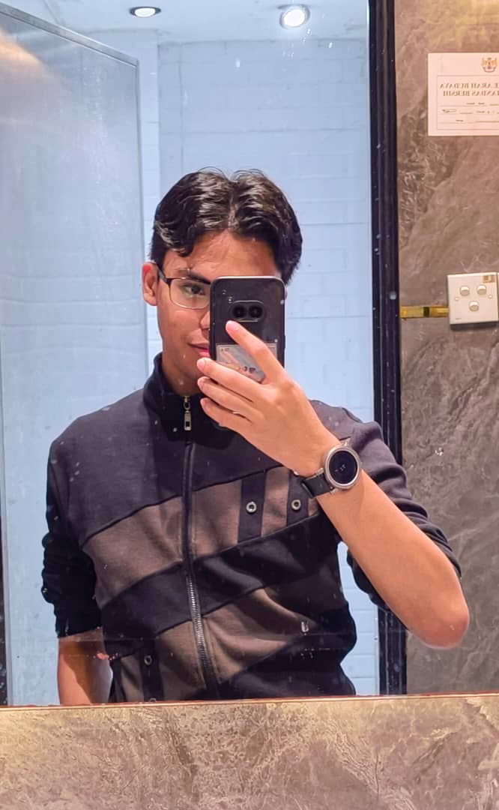

About Me

Wan Faruq Jazli
I am a first-year Computer Science student at Universiti Teknologi Malaysia (UTM), specializing in Data Engineering. My journey in technology began with a curiosity for how systems work, which has now evolved into a passion for software development, data analysis, and logic design.
Beyond coding, I have a strong background in leadership, having served in various student committees from high school to university. I believe in the balance of technical skills and soft skills to create impactful solutions.
Leadership
- UTM: Committee Member SUSKOM'25, E-Sports Athlete (MLBB)
- KMJ: Committee Member (Equipment Bureau) College Election
- SMK Chukai: President of RBT Club (2024), Treasurer (2023)